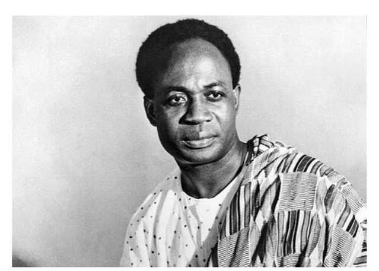
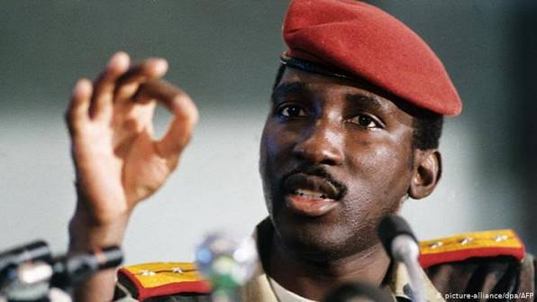
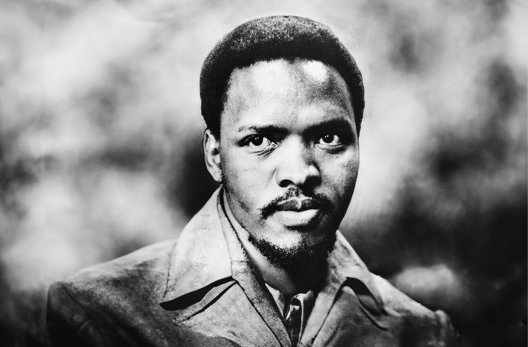

01
Leader Profiles
Read biographies, achievements, memorable quotes, and timelines of important African leaders.
Learn More →African History
Discover the inspiring stories of visionary leaders who challenged colonial rule, fought for justice, and helped shape modern Africa.
Meet the LeadersOur Project
Africa's struggle for independence transformed the continent forever. Throughout the twentieth century courageous leaders united their people against colonial rule, calling for freedom, dignity, equality, and self-government.
This website introduces several influential leaders who inspired independence movements and promoted African unity. Visitors can learn about their backgrounds, achievements, challenges, and lasting impact.
Read biographies, achievements, memorable quotes, and timelines of important African leaders.
Learn More →Understand colonialism, independence movements, and how African nations gained freedom.
Explore →These leaders continue to inspire generations through their courage, sacrifice, and vision for Africa.
Read More →Key Moments
Ghana became the first country in sub-Saharan Africa to gain independence from colonial rule.
Seventeen African nations achieved independence during this historic year.
African states established the Organization of African Unity to strengthen continental cooperation.
Thomas Sankara became President of Burkina Faso and introduced major social and economic reforms.
Featured

First President of Ghana and a leading advocate for Pan-Africanism.

Known for promoting self-reliance, social reform, and African independence.

Leader of South Africa's Black Consciousness Movement.
"Freedom is not something that one people can bestow on another as a gift."
Kwame Nkrumah